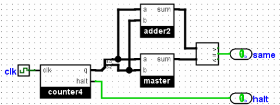

测试多个文件
在课堂示例中，您将拥有许多文件，您希望测试它们的等效性，并且您不想读取每个学生解决方案的输出。
将比较构建到电路中
一种方法是构建一个直接进行比较的测试电路。 在这里，我们在包含解决方案电路的测试文件中创建一个附加电路。 在我们的整体测试电路中，我们将 master.circ 中的子电路和直接位于嵌套电路中的解决方案电路中的子电路包括在内。 我们对其进行接线，以便只有一个输出，只要两个子电路一致，该输出就是 1。

现在我们可以简单地运行 Logisim-evolution 替换每个查询文件。 对于任何正确的解决方案，唯一的输出将是“1”。
使用重定向和 shell 脚本
如果您对命令行非常熟悉，则可以构建自己的 shell 脚本来完成此任务。 在这里，我们将使用重定向（> 运算符）将每个电路的输出保存到文件中。 例如，我们可以发出以下两个命令来收集主电路和查询电路的输出。
java -jar logisim-evolution.jar test.circ -tty table > out-master.txtjava -jar logisim-evolution.jar test.circ -tty table -sub master.circ query.circ > out-query.txt
现在我们创建了两个不同的文件。 然后，我们可以使用为此目的构建的程序来比较两个输出文件。 在 Linux 或 MacOS X 下，您可能需要使用 cmp 或 diff 命令行实用程序。 在 Windows 下，您可能需要使用命令行实用程序 fc 或 WinMerge。
要处理多个查询文件，您可能需要构建一个简单的程序（例如 shell 脚本）来迭代每个查询文件并比较输出。 以下是我在 Linux 的 bash 下的操作方法：
RUN_TEST="java -jar logisim-filename.jar adder-test.circ -tty table"
${RUN_TEST} > output-master.txt
for QUERY_FILE in query*.circ
do
if ${RUN_TEST} -sub ^master.circ ${QUERY_FILE} | cmp -s output-master.txt
then
echo "${QUERY_FILE} OK"
else
echo "${QUERY_FILE} different"
fi
done
下一步： 测试向量 。